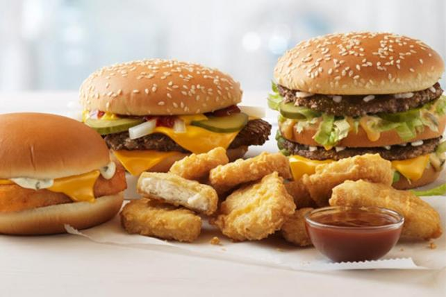
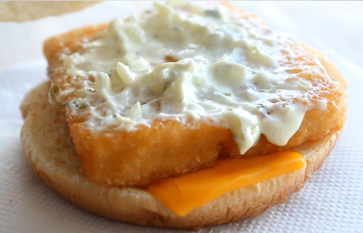
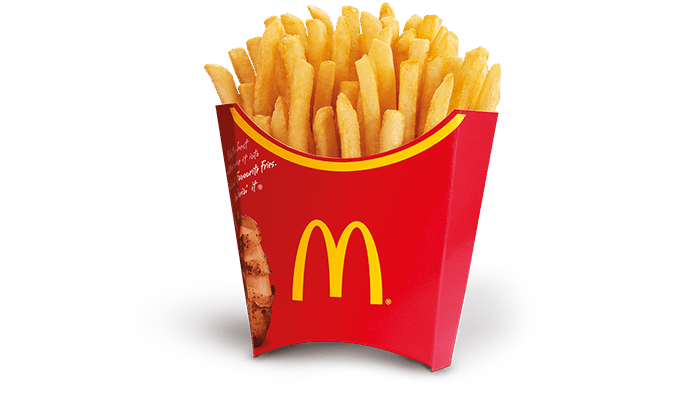

Why eat Fast Food like McDonald's to lose weight?
Fast food can be a great alternative to turn to when you’re too busy to cook, forgot your lunch, don’t have access to a kitchen, etc. However, let’s say your colleagues or friends want to get fast food but you are on a diet. What can you do in that situation? We’ve put together this guide in order to find healthier and macronutrient friendly options that you can eat on a diet and lose weight.
McDonald’s is an easily accessible restaurant and most cities have at least one location. Although, McDonald’s is known to be unhealthy and many of their menu items can attribute to weight gain. The best part of it all is that most McDonald's locations have a drive-thru that's open 24/7!
How to find Healthy options in McDonald’s Menu?
If you've ever heard of the man who lost weight while eating McDonalds then just know that it isn't impossible. He lost about 56 pounds by monitoring his calorie intake.
To understand how he did this and how we can eat McDonalds for weight loss, we need
to understand how people gain and lose weight.
The main way people gain weight or fat is by overeating.
Two major ways people gain weight is by not paying attention to how much fat their meals have and by eating too many
carbohydrates.
Don’t get us wrong though, fat and carbs are not bad for you.
However, if you eat too much of both then you’ll end up gaining weight. If you want to learn more
about Fat and Carbs, and how to manipulate them to lose weight then check out
our Nutrition section for a more in-depth explanation of this!
McDonald’s burgers and sandwiches usually have one thing in common.
They’re all high in fat and/or high in carbohydrates.
We look for options that are lower in fat (less than 15 grams) and moderate in
carbs (between 25 to 35 grams).
Our main priority though is to keep our Fat low because that is the
easiest option to modify. You can remove Cheese, Mayonnaise, Sauce, etc. from items to reduce the amount of fat. However, the main way to reduce the amount of Carbs in a menu item is to remove the Bun a sandwich comes with. We try to stay away from doing this. If you’re still curious as to how many calories the Bun or bread portion of the sandwich contains then we’ve included that data in our table for some of the items.
We’ve gone through McDonald’s online nutrition calculator and found some of
their best healthy options to eat. The tables have been
color-coded to find healthy options easier.
- Green means that the item is something we recommend and that it can be further modified to be healthier.
- Yellow means that the item is an option, but it needs further modification to truly be healthy.
- Red indicates items to stay away from because modifying them does not make them healthier by much.
Before we begin, we recommend that you calculate your daily Calorie and Macronutrient intake so you know your Calorie limits, especially your Fat, Protein, and Carbohyrate goals for the dayl We've put together a simple guide to calculate your Calories here!
Weight Loss Tools - Healthy Fast Food
First, we highly recommend downloading the Free app MyFitnessPal. This app allows you to log any food item that has a nutrition label so you can see how many calories and macronutrients you’re eating per day. If you don’t have a smartphone then you can have access to the same features on their website.
We usually recommend using a food scale in order to accurately measure how much food is actually being eaten. However, in this case we are purchasing food from McDonald’s so a food scale will not be necessary. If you add more ketchup, barbeque sauce, ranch, etc. then we recommend using a food scale. We’ve found a few Food Scales on Amazon, and there's even a portable food scale as well:
| Breakfast Item | Calories | Fat | Carbs | Protein |
|---|---|---|---|---|
| Egg White Delight | 260 | 8g | 29g | 16g |
| Egg White Delight No Cheese | 210 | 4.5g | 27g | 14g |
| Sausage Burrito | 290 | 15g | 26g | 13g |
| Sausage Burrito No Cheese | 240 | 11g | 25g | 10g |
| Egg McMuffin | 300 | 12g | 30g | 18g |
| Egg McMuffin No Cheese | 250 | 8g | 28g | 15g |
| Sausage McGriddle | 430 | 29g | 42g | 11g |
| Sausage Egg n Cheese McGriddle | 550 | 32g | 45g | 20g |
| Fruit + Maple Oatmeal | 310 | 4g | 62g | 6g |
| Fruit + Maple Oatmeal no Cranberry Raisin Blend | 240 | 3.5g | 46g | 5g |
Healthy Breakfast - McDonald’s Nutrition Menu
Egg White Delight is one of the best breakfast options. Without modifying it, the Egg White Delight is less than 300 calories, and has low fat but moderate carbs. It also has a decent amount of protein. If Cheese is removed from the sandwich then the amount of fat is almost cut into half at 4.5 grams.
Sausage Burrito is an OK breakfast option. The main issue with it is that it has 15 grams of fat, but it can be lowered to 11 grams of fat by removing cheese. Adding a little ketchup to it will make it taste better without the cheese, but if you add too much ketchup then you’ll increase the amount of carbs.
Egg McMuffin is tied for the best breakfast option with the Egg White Delight. At 300 calories with only 12 grams of fat, 30 grams of Carbs, and 18 grams of Protein it has a good macronutrient split even with cheese. It gets even better once Cheese is taken out at 8 grams of Fat, 28 grams of Carbs, and 15 grams of Protein. This becomes an item with decent fat, carbs, and protein.
Sausage McGriddle or the version with Egg and Cheese are not healthy options. They contain a significant amount of fat at
29 to 32 grams of Fat, while having a moderate-to-high amount of carbs (42 to 45 grams). Even if Cheese is removed, the sausage
itself carries a significant amount of fat so taking cheese out doesn’t help.
By eating a McGriddle, you’ll have to watch the amount of fat and
carbs in your meals later in the day. So the Sausage McGriddle and Sausage Egg and Cheese McGriddles are items you should stay away from.
Fruit + Maple Oatmeal sounds like it’s a healthy option, but by looking at the Macronutrients, it’s not very Macro-friendly. It has low fat, but it
has 62 grams of Carbs. One pack of microwaveable Maple Brown Sugar oatmeal has around 35 grams of Carbs.
A significant amount of Carbs in McDonald’s oatmeal comes from
the Cranberry Raisin Blend, which contains a lot of sugar. If you’re deadset on Oatmeal then we recommend buying it without the Cranberry Raisin blend so the amount of
Carbs drops from 62 grams to 46 grams.
| Chicken/Fish Item | Calories | Fat | Carbs | Protein |
|---|---|---|---|---|
| Filet-O-Fish | 390 | 19g | 38g | 17g |
| Filet-O-Fish No Cheese | 360 | 17g | 38g | 16g |
| Filet-O-Fish No Tartar Sauce | 300 | 9g | 38g | 17g |
| Filet-O-Fish No Cheese or Tartar Sauce | 270 | 7g | 37g | 15g |
| McChicken | 350 | 15g | 40g | 15g |
| McChicken No Mayo | 310 | 11g | 38g | 15g |
| McChicken No Mayo or Bun | 160 | 9g | 10g | 9g |
| Buttermilk Crispy Chick. Sandw. | 570 | 23g | 64g | 28g |
| Buttermilk Crispy - No Mayo | 530 | 18g | 63g | 28g |
| Buttermilk Crispy - No Bun or Mayo | 310 | 16g | 21g | 20g |
| Artisan Grilled Chick. Sandw. | 380 | 7g | 44g | 37g |
| Artisan Grilled No Vinaigrette | 360 | 4.5g | 44g | 37g |
| Artisan Grilled No Artisan Roll/Bun | 140 | 2g | 2g | 29g |
| Chicken McNugget - 4 pc. | 180 | 11g | 11g | 10g |
| Chicken McNugget - 6 pc. | 270 | 16g | 16g | 15g |
| Chicken McNugget - 8 pc. | 440 | 27g | 26g | 24g |
| Chicken McNugget - 10 pc. | 890 | 53g | 53g | 49g |
Healthy Chicken and Fish Items - McDonald's Nutrition Menu
Filet-O-Fish is not a healthy item that’ll help you lose weight without modifying it. One fish sandwich has 390 calories, 19 grams of fat, 38 grams of Carbs, and 17 grams of Protein. It contains too much fat and won’t be able to make you feel full unless eat something else with the meal. However, because it has just under 20 grams of fat, you’ll need to find something that is low in fat in your next meals or else you might go over your Macronutrient goals for weight loss.
We recommend taking out Tartar Sauce to bring it down to only 9 grams of fat, but this takes away most of the taste of the Filet-O-Fish sandwich. Adding ketchup can help with the taste but eating a Fish sandwich without Tartar Sauce is unthinkable!
McChicken is a good bargain for only $1.00. However, one McChicken has 15 grams of fat and 40 grams of Carbs, which won’t be an ideal item. By ordering a McChicken without Mayo, you can lower the amount of fat to 11 grams and Carbs to 38 grams.
We recommend ordering two without Mayo, and adding one of the McChicken patties to the other sandwich. Resulting in a double McChicken. One McChicken patty contains 9 grams of fat, 10 grams of carbs, and 9 grams of protein. So one double McChicken without Mayo is 20 grams of Fat, 48 grams of Carbs, and 24 grams of Protein. Making it a better and healthier alternative than one McChicken with Mayo. And it will only cost you $2.00 plus tax!
Buttermilk Crispy Chicken Sandwich is not an item we recommend even with modifying it. Moreover, the actual chicken patty is covered in Carbs, it’s also fried, which pushes the amount of fat over our threshold. At 23 grams of Fat, 64 grams of Carbs, and 28 grams of Protein the Buttermilk Crispy Chicken Sandwich may be a good contender for a dinner item by itself. However, you’ll have to watch your fat and carbohydrates most of the day, and make sure you eat protein heavy meals during the day.
Artisan Grilled Chicken Sandwich is our favorite Chicken item on McDonald’s menu! First, it has high protein at 37 grams, but it is also low in fat at 7 grams. One of the downsides of this sandwich is that the Artisan Roll it comes in has 42 grams of Carbs, but it’s not something that will ruin this meal for you.
Although expensive, we recommend purchasing an Artisan Grilled Chicken Sandwich with an extra Grilled Chicken patty. One Grilled Chicken patty has 2 grams of Fat, 2 grams of Carbs, and 29 Grams of Protein. When combined, one double Grilled Chicken sandwich is at 9 grams of Fat, 46 grams of carbs, and 66 grams of protein. Not only will it fill your stomach, but adding ketchup or barbeque sauce can make it taste even better!
Chicken McNuggets are not recommended on this list. The 4 piece version is not filling and contains 11 grams of Fat, 11 grams of Carbs, and 10 grams of Protein. The 10 piece version has 53 grams of Fat, 53 grams of Carbs, and 49 grams of Protein. Eating that much fat will hit most people’s Fat Macronutrient goals for the day so they won’t be able to eat much fat in their meals later in the day!
If Chicken McNuggets are your favorite menu item or a must-have then we recommend the 6 piece version, which contains 16 grams of Fat and Carbs, and
15 grams of Protein. However, watch out when adding sauce because you can add unnecessary calories to your meal.
| Sauces | Calories | Fat | Carbs | Protein |
|---|---|---|---|---|
| Creamy Ranch | 110 | 12g | 1g | 0g |
| Habanero Ranch | 80 | 7g | 5g | 1g |
| Honey Mustard | 60 | 4g | 6g | 0g |
| Buffalo | 30 | 3.5g | 1g | 0g |
| BBQ | 45 | 0g | 11g | 0g |
| Sweet N' Sour | 50 | 0g | 11g | 1g |
| Side Item | Calories | Fat | Carbs | Protein |
|---|---|---|---|---|
| Fries - Small | 230 | 11g | 29g | 3g |
| Fries - Medium | 340 | 16g | 44g | 4g |
| Fries - Large | 510 | 24g | 66g | 7g |
Healthy Side Items - McDonald's Nutrition Menu
Fries are something McDonald’s is famous for, but if you take a look at the nutrition facts for them then you’ll see why we can’t recommend them. The small fries has 11 grams of Fat, 29 grams of Carbs, and 3 grams of Protein. We recommend the small version as a quick snack by itself. Other than that, fries have a high potential to make you gain weight.
The medium version has 16 grams of Fat, 44 grams of Carbs, and 4 grams of Protein. While the large version has 24 grams of Fat, 66 grams of Carbs, and 7 grams of Protein. They’re pretty high in Carbs and Fat. Also, fries are usually eaten in a combo meal so you might be surprised at the nutrition facts for the entire meal. We only recommend medium or large fries during dinner and only if you’ve carefully watched your Fat and Carb intake most of the day, while eating high protein in order to stay in a caloric range for weight loss.
| Burgers | Calories | Fat | Carbs | Protein |
|---|---|---|---|---|
| Cheeseburger | 300 | 11g | 33g | 15g |
| Cheeseburger No Cheese | 250 | 8g | 31g | 13g |
| Cheeseburger No Cheese or Bun | 100 | 6g | 3g | 8g |
| Double Cheeseburger | 430 | 21g | 35g | 25g |
| Double Cheeseburger No Cheese | 340 | 14g | 32g | 20g |
| Double Cheeseburger No Cheese or Bun | 190 | 12g | 4g | 15g |
| McDouble | 380 | 18g | 34g | 23g |
| McDouble No Cheese | 340 | 14g | 32g | 20g |
| McDouble No Cheese or Bun | 190 | 12g | 4g | 15g |
| Hamburger | 250 | 8g | 31g | 13g |
| Hamburger No Bun | 100 | 6g | 3g | 8g |
| Quarter Pounder w/ Cheese | 530 | 27g | 41g | 31g |
| Quarter Pounder NO Cheese | 430 | 20g | 38g | 26g |
| Quarter Pounder NO Cheese or Bun | 260 | 18g | 6g | 20g |
| Double Pounder w/ Cheese | 770 | 45g | 42g | 51g |
| Double Pounder NO Cheese | 670 | 37g | 39g | 46g |
| Double Pounder NO Cheese or Bun | 500 | 35g | 7g | 40g |
| Big Mac | 540 | 28g | 46g | 25g |
| Big Mac No Cheese | 490 | 25g | 44g | 23g |
| Big Mac No Cheese or Big Mac Sauce | 400 | 15g | 42g | 22g |
| Big Mac No Cheese, Big Mac Sauce, and Bun | 190 | 12g | 3g | 15g |
Healthy Burgers - McDonald's Nutrition Menu
Cheesburgers are a cheap meal you can use for weight loss. One burger has 11 grams of fat, 33 grams of Carbs, and 15 grams of Protein. At $1.00 though that’s a pretty good bargain. If you order 2 then you’re only at 22 grams of Fat, 66 grams of Carbs, and 30 grams of Protein. If you remove the cheese, which makes it a Hamburger, then you’ll be reducing the amount of fat from 11 grams to 8 grams.
We recommend purchasing one regular Cheeseburger and one without the Cheese. If you add the burger patty without cheese to the regular Cheeseburger, making a Double Cheeseburger then you’ll be at 17 grams of Fat, 36 grams of Carbs, and 23 grams of Protein.

McDonald’s does have a Double Cheeseburger option on their menu. However, it contains 21 grams of Fat, 35 grams of Carbs, and 25 grams of Protein. By manipulating the Cheeseburger, you’re able to lower the fat by 8 grams and enjoy and double cheeseburger!
Double Cheeseburger is not a healthy or Macro-friendly option having 21 grams of fat. If you make it a Double Hamburger with no cheese then it lowers the fat to 14 grams making it a healthier item especially with 20 grams of Protein.
The McDouble with no cheese is a decent option because it lowers fat to 14 grams, while having 32 grams of Carbs, and 20 grams of Protein. Add some ketchup, mustard, or barbeque sauce to compensate for the flavor without the cheese.
Hamburgers are low in fat and have a decent amount of protein. If you purchase a Double Hamburger, which basically just adds an extra burger patty, makes it a more satisfying item. At 350 calories, a double hamburger has 14 grams of Fat, 33 grams of Carbs, and 21 grams of Protein.
Quarter Pounder with Cheese is not a recommended menu item. With 530 Calories, 27 grams of Fat, 41 grams of Carbs, and 31 grams of Protein the Quarter Pounder w/ Cheese would hit almost or more than half of our Fat limit for the day. If you must have one then order it without Cheese, but that still doesn’t make it any better at 20 grams of Fat, 38 grams of Carbs, and 26 grams of Protein.
Double Quarter Pounder w/ Cheese is definitely something you should stay away from as well. It simply has too much fat at 45 grams and even taking out cheese will bring it down to 37 grams of Fat. No modifications can really help this burger be Macro-friendly.
The Big Mac is one of McDonald’s staple menu items. However, at 540 Calories, 28 grams of Fat, and 46 grams of Carbs, the Big Mac is not something we can recommend. The only way we recommend purchasing the Big Mac is if you get it without Cheese or Big Mac Sauce. This brings it down to 400 Calories, 15 grams of Fat, 42 grams of Carbs, and 22 grams of Protein. By lowering the amount of fat, you’ll be able to have more freedom in choosing your later meals.
McDonald’s can be an alternative while dieting. Yes, it can be unhealthy but by removing unnecessary fat from the breakfast, chicken/fish, and burgers
you can lower the fat and make the meals healthier. Also, by eating in a Calorie Deficit and using this method to make McDonald’s menu Macro-friendly,
you can lose weight without having to entirely give up fast food!
References
- Pawlowski, A. (2014, March 07). Man loses 56 pounds after eating only McDonald's for six months. Retrieved April 7, 2017, from http://www.today.com/health/man-loses-56-pounds-after-eating-only-mcdonalds-six-months-2D79329158
- McDonald's Nutrition Calculator | McDonald's. (n.d.). Retrieved April 7, 2017, from https://www.mcdonalds.com/us/en-us/about-our-food/nutrition-calculator.html